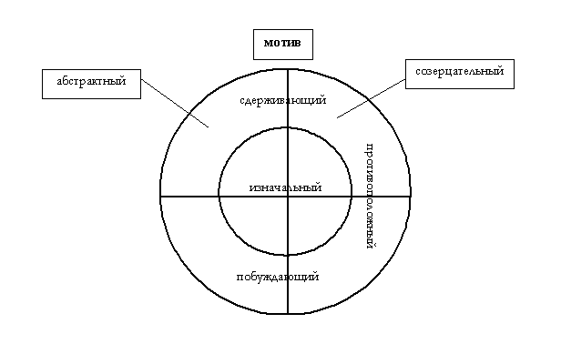

§ 001. О свободе воли
Заметка по поводу возможности права
Указывавшиеся работы
§ 001. О свободе воли.
Основание возникновения мысли.
Однажды я смотрел Формулу 1, по-моему, это был Сильверстоун (гран-при Великобритании) и тогда еще участвовал Мика Хаккинен, как вдруг на трассу выбежал разодетый в бумажные и тряпичные разноцветные лохмотья человек, из-за чего Мика, ехавший на него первым, вынужден был сильно сбросить скорость и уйти с обычной траектории. Наверное, любители помнят этот вопиющий по нарушениям всех канонов случай. Желтые флаги. На трассу выбегают комиссары и, поймав злоумышленника, за шкирку тащат его за пределы трассы. Мне казалось, теперь, когда этот человек в безопасности, человек, который мог подвести под суд и тюрьму множество людей, получит мощный удар в лицо от какого-нибудь комиссара, которые и так с ним не церемонились. Я бы и сам не замедлил в этом гневе. Но вдруг, благодаря режиссерам трансляции, стало видно лицо этого человека. Он явно походил на сумасшедшего. Безумное лицо выражало абсолютное непонимание того, что происходит и почему происходит. Мой гнев сразу сменился на сострадание. Мне стало жалко, что его тащили по гравию; теперь я уже не считал наказание справедливым. Он просто не мог заслуживать нашего гнева и суда.
Этот случай сразу прояснил мне основы возможности вменяемости ответственности, и уже через несколько минут я сидел за своими рукописями, разоблачая на множество страниц всевозможные незнания, связанные с возможностью вменяемости и свободой воли. Теперь эти записи перед вами.
(Вообще-то, можно заметить кое-какой тупик. Я и сам здесь запутываюсь. Вроде бы я писал о свободе воли после разоблачения заблуждения «материя всегда объект». Последнее было в 2002 году, но Мика не играет с 2002 года).
Разоблачение незнания.
А. Два значения свободы.
В зависимости от того, что понимать под свободой, к какой части человеческого Я ее применять (к разуму или воле) и в качестве чего мыслить эти части (воля как не-объект, разум как не-объект (субъект), воля как объект (переживания), разум как объект (понятия)) – в зависимости от этого один и тот же человек в одном и том же положении может быть назван как свободным, так и несвободным.
Вообще, свобода чего-либо может пониматься либо как возможность беспрепятственного (непринужденного) проявления или действия чего-либо, либо как независимость чего-либо от строго определенной и неизбежной цепи причинности. Но эти два значения свободы не исключают друг друга. Второе значение примечательно в том смысле, что, действительно, нельзя назвать свободным то, проявление чего неизбежно в данном месте в данное время и с необходимостью вызывается столь же неизбежной и притом достаточной причиной, насколько бы беспрепятственным это проявление ни было. Это можно считать принуждением со стороны неумолимой цепи причинности, а, следовательно, отсутствием свободы. Так же и в первом значении отсутствие свободы может быть вызвано какими-либо препятствиями, со стороны которых и произойдет принуждение. Но т. к. мы имеем дело не со взаимоисключающими значениями свободы, то здесь по отношению к чему-либо теоретически и вообще возможны различные комбинации в решении вопроса о свободе этого чего-либо: например, что-то может быть свободно в первом значении и несвободно во втором или свободно в обоих значениях, т. е. можно сказать абсолютно свободно, и т. д. Однако же это только предварительные умозрительные предположения в соответствии с тем, что теоретически позволяет здесь логика, вследствие отсутствия взаимоисключения данных значений.
Б. Незатронутые задачи в философии по поводу свободы воли.
Если требуется объяснить какое-либо явление в природе, то обязательно нужно иметь в виду основы философии природы. Ведь именно там и с самого начала дается разъяснение, как это нужно и можно делать. Именно там выявляются возможные границы объяснения. Отчасти это высказывается и в других местах, например, в начале «факта самоосознания». Хотя начало этому положено еще в философии Шопенгауэра.
Вопрос о свободе воли касается свободы наших поступков, которые, несомненно, есть некоторое явление в природе. Вопрос этот, по-моему, вполне освещен Шопенгауэром и приступаю я к нему лишь с некоторыми незатронутыми задачами:
1) опровержение того, что разум всецело должен считаться условием нашей моральной свободы, и
2) показ сомнительности в шопенгауэровских и кантовских основаниях свободы воли, предстающей условием вменяемости.
Считаю необходимым сделать вполне ясным предмет первой задачи, т. к. на его пути легко впасть в иллюзию свободы воли, отчего в нее впал даже Аристотель, хотя далеко не один он впадал и будет впадать в эту ошибку, если ее не осветить ярким светом.
В. Первая задача.
Ход всего моего дальнейшего рассуждения по форме (но не по содержанию) будет напоминать одноименное сочинение Шопенгауэра:
- сначала доказательство несвободы воли, а затем
- объяснение вменяемости, которая покоится, однако, на противоположном предположении свободы воли.
Именно последнюю, моральную свободу как таковую можно представить лишь как способность действовать несоответственно своей исконной воле, но всё же по своему желанию, т. е. так, как заблагорассудится. Я говорю «как заблагорассудится», а не «как нам захочется», т. к. в последнем случае получится, что мы можем поступать только так, как нам захочется и никак иначе. Этот пункт подробно разобран Шопенгауэром в его сочинении, где он совершенно обоснованно показывает, что осознание этого «как нам захочется» рисует лишь иллюзорную свободу, ибо на самом деле оно показывает строго подчиненную зависимость наших действий от нашей неизменной воли. Однако для вменения мы как раз должны были бы обладать свободой действий так, как нам заблагорассудится, в каждом данном случае. Эту свободу следует назвать эмпирической.
Необходимость действий.
Разум представляет из себя абстрактную сферу возможных мотивов для нашей воли наряду с созерцательной сферой – восприятием. Человек может иной раз, исходя из разумных доводов, как-то оградить и ограничить свою непосредственную склонность. Это как раз и заставляет видеть в разуме условие эмпирической свободы. Однако в каждом конкретном случае, в каждом данном поступке усмотреть свободу, т. е. возможность какого-либо иного поступка у человека, невозможно. Ведь каждое действие человека, как, собственно, и сдерживание его действия, происходящее в этом мире, подчиняется закону причинности, а именно, более узкой его сфере, применимой к существам, определяемых к действию мотивами – закону мотивации. Причем сила последнего и его сущность ни в чем не теряется по сравнению с непоколебимым действием причинности в неживой природе. Подобно тому как по закону причинности в собственном смысле всякое действие в неживой природе происходит неизбежно и под побудительным влиянием достаточной причины, подобно этому по закону мотивации всякое человеческое действие неизбежно происходит под действием мотива, являющегося для воли данного человека и в данной обстановке достаточным. Точно так же если человек в конкретно данном поступке сдерживает непосредственное хотение своей воли, направляет его в другое русло и к другим средствам или же вообще напрочь отказывает ему в каком бы то ни было исполнении, то данный поступок вызван при данных обстоятельствах вполне достаточным для необходимости (неизбежности) этого поступка мотивом. Если мотив, равно как и любая причина, не является достаточным, то он и не может вызвать действие, а коль скоро он достаточен, то он с непоколебимой неизбежностью вызывает соответствующее действие. Сами слова указывают на суть признаков достаточного мотива (причины) и неизбежного, необходимого (не обходимого) действия. Поэтому человек, как и всякое другое существо и вещь в этом мире, подчиняется строгой необходимости в своих отдельных действиях.
Восприимчивость воли вообще к тем или иным мотивам зависит от ее сущности, природы, характера. У каждого она индивидуальна (и неизменна), и называют ее характером человека. Поэтому одни мотивы могут быть достаточны для одних и совершенно не действовать на других, совершенно аналогично тому, как выпущенная (причина) из моей руки ручка упадет (одно действие) под действием неживой силы природы – тяжести (одна воля) и не упадет на землю (другое действие) в открытом космосе, не подчиняясь силе тяжести, а подчиняясь слабо действующей на нее силе всемирного тяготения (другая воля). Причем сказанное справедливо как для побуждающих, так и для сдерживающих мотивов, о которых сейчас будет сказано.
Классификация мотивов.
Всякий мотив представляет из себя желаемую цель, к которой можно стремиться посредством различных средств, которые есть так же цели, но предварительные, на пути к основной цели. В зависимости от того, какова по природе желаемая цель и ее результаты – позитивна или негативна, в зависимости от этого человек соответственно либо начинает действовать, либо перестает, сдерживает себя. Это дает повод для обозначения побуждающих и сдерживающих мотивов. Тем не менее, каждый мотив в каждом конкретном случае, вызывая собой действие или отсутствие его, вызывает его с необходимостью, будучи достаточным.
А т. к. из столкновения различных предвидимых результатов, целей и средств на первое место могут выходить (в зависимости от данного порыва воли, от данных воспринимаемых внешних обстоятельств и от имеющихся в наличии сведений у разума) и непосредственно не свойственные нашей первоначальной воле (выбор иного средства или иной цели в данном положении по сравнению с выбранной целью в подобном прошлом положении), то это сеет иллюзию, что есть поступки, не соответствующие нашей исконной воле, ведь при этом изначальное игнорируется, а достаточным мотивом становится что-то новое, принятое во внимание. Новый мотив, который был принят во внимание и стал достаточным мотивом, переборов более слабый дотоле действующий мотив, можно назвать противоположным. По-моему, именно так определяет противоположный мотив и Шопенгауэр. Противоположным мотивом может быть и нечто принятое во внимание и пересмотренное в самом созерцании, а не только в разуме, иначе говоря, пересмотренное при непосредственном наличном наблюдении вещей в природе, а не при обдумывании. Противоположным мотивом может быть и побуждающий, и сдерживающий мотив. Хотя два последних не обязательно должны быть противоположными, ибо каждый из них может быть изначальным. Кроме того, побуждающий или сдерживающий мотив может быть и созерцательным, и абстрактным. В логическом круге это выглядит следующим образом.

Поясню. Всё северное полушарие принадлежит сдерживающему. Южное – побуждающему. Западное – абстрактному. Восточное – созерцательному. Ядро принадлежит изначальному. Мантия – противоположному.
Таким образом, всякий мотив имеет три признака в различных сочетаниях: 1) мотив либо абстрактный, либо созерцательный, 2) либо сдерживающий, либо побуждающий, 3) либо изначальный, либо противоположный. Следовательно, количество видов мотивов составляет восемь возможных вообще.
Разум как условие эмпирической свободы.
Можно усмотреть некоторые виды противоположных мотивов, могущих перебороть нашу склонность и ее мотив: устрашение (так перемотивирует уголовный кодекс), показ более важных и интересных дел для индивида, надежда или мечта, связанная с более желанными результатами. Здесь в каждом случае одни цели с предполагаемыми результатами заменяются другими, более желанными. Причем в связи с тем, что цели могут быть позитивными и негативными и у цели могут быть одна или несколько предварительных целей (средства), которые могут приводить к различным конечным результатам даже при стремлении к одной и той же цели, следует иметь в виду различные комбинации противоборствующих мотивов и вытекающие отсюда действия или выжидания человека. Однако это не значит, что воля совсем престает стремиться к целям, от которых отказалась. Дело в том, что ее влечение более мотивировано иными, более сильными, достаточными целями в данном положении. В целом при другом положении вещей, при ослаблении достаточного противоположного мотива, воля может опять напрямую стремиться к старым целям. Это надо будет пояснить последующими соображениями, хотя в общем всё складывается из трех уже упомянутых составляющих: данного напора воли, данного восприятия и данного разумения.
Воспринимаемые объекты, будучи возможными мотивами наших действий, определяют в силу своей непосредственной наличности нашу волю сильнее, чем абстрактные мотивы (принципы), и тем сильнее, чем более сильно в данной обстановке желание воли, ибо она направляется прежде всего на непосредственно объективное внешнее. Причем абстрактные принципы в качестве возможных мотивов проигрывают спор за статус достаточных не только из-за своей ненаглядности, но из-за того, что они служат в большинстве своем противоположными мотивами, т. е., собственно, лишь мешают своей же воле проявить себя, в чем воля всегда очень требовательна. И чем сильнее хотение воли в данной обстановке, тем меньше шансов у абстрактных мотивов не только вступить в спор с созерцательными мотивами, но и вообще быть взятыми к рассмотрению. И наоборот, чем менее сильно хотение воли, чем более спокойна воля, тем больше шансов у какого-нибудь абстрактного мотива стать достаточным. Соответственно эту градацию можно проследить от аффекта и до полной невозмутимости. Собственно, один и тот же абстрактный мотив в зависимости от обстановки и напора воли может в разное время и при различии сведений у разума быть и достаточным, и недостаточным, уступая этот статус созерцаемому мотиву или более сильному абстрактному мотиву.
Вообще, именно воля в более спокойных состояниях заставляет свое орудие – разум – искать для нее другие, не только созерцательные, но и всевозможные абстрактные мотивы. Орудие это, конечно же, более улучшенное по сравнению со своим предшественником в ряду сфер мотивов – восприятием. Ибо орудие это предлагает воле гораздо больше, чем наличное созерцание, да к тому же еще и ищет всевозможные лучшие пути для достижения своих целей. С помощью разума, этого своего фонаря, слепая во мраке бессознательного хотения воля быстро находит более удобные средства для своих целей, заглядывает в будущее и возвращается в прошлое, чтобы еще раз основательно выбрать себе путь. И хотя разум служит своей воле, он всё же по природе большинства своих мотивов сдерживает ее, заставляет терпеть и выбирать более долгие пути, а иной раз вообще остановиться и бездействовать, что воле уж никак не по нутру. Поэтому в спокойном состоянии воля будет прислушиваться к своему проводнику, ибо она «понимает», что он плохого не посоветует, но если разбушуется, то она всё сделает, как хочет, коротким путем, отбросив разумные доводы. Причем взволновать, прорвать волю и разрушить разумные дамбы может и незначительное событие, тогда как построить эти более или менее крепкие дамбы дается с большим трудом. К тому же надо учесть несдержанность воли и недальновидность и ленивость разума у многих, отчего они почти без раздумий полагаются на свое воление и, как следствие, часто ловят себя на опрометчивости, ибо доверялись лишь слепому хотению.
Дальновидность же разума, его способность выявлять возможные будущие события и результаты, предоставляя воле достаточные абстрактные мотивы, служит основанием для воспитания и вырабатывания более выгодного, приобретенного характера, покрывающего исконный, слепой умопостигаемый характер. Но дело тут опять-таки зависит от того или иного напора воли к исконным целям и той или иной дальновидности разума у человека.
В зависимости от различий этой дальновидности у разных людей можно проследить градацию от глупца и до мудреца. Причем то, что разум, в отличие от созерцания, предоставляет воле более полезные мотивы, объясняется именно изначальной бессознательностью воли. Отсюда можно понять суть слова «благоразумие». Это же в то же время доказывает действительность слепого хотения, которое непосредственно стремится к тому, что замечает созерцание.
Некоторые абстрактные мотивы, побуждающие или сдерживающие, будучи более полезными и целесообразными, способны быть достаточными для тех, кто изначально полагался на свое воление от непосредственных впечатлений. Поэтому, например, вор может стать добросовестным тружеником, а охотник за наслаждениями может превратиться в благоразумно умеренного человека. Поэтому разум может отвести от противоправных действий и направить на общественно-полезные, поэтому может из хама сделать глубоко нравственного человека. Всё это может дать повод для вывода о разуме как о силе, которая преодолевает нашу волю и руководит ею, направляя на общественно и лично целесообразное, а следовательно, дарует нам, как существам-обладателям этой воли, свободу. Однако это было бы заблуждением, связанным с забыванием некоторых основ философии природы: каждый поступок необходим и вызван достаточным мотивом в данном положении для данной воли, которая выступает внутренним условием для всякого действия, равно как и прекращения действия, а достаточный мотив выступает лишь поводом к этим, уже необходимым действиям. Именно поэтому человек делает либо то, что непосредственно хочет, либо то, что считает выгодным для себя. Третьего не дано. Ибо никто ничего не станет делать (либо не приостановится) если поведение в цепи «мотив (причина) – действие» не обусловлено личным хотением. Тут можно вспомнить мой излюбленный пример с выпусканием из руки ручки в разных условиях или падение камешка со скалы на Земле и на Венере. Всякое поведение внутренне обусловлено той или иной силой природы – волей, мотив же – лишь повод для проявления данной воли, для другой он может оказаться недостаточным.
Если же кому-то хотелось бы отстаивать идею о разуме как условии эмпирической свободы, то пришлось бы прийти к крайне абсурдным выводам. Получилось бы, что разум играет с волей, как со своей игрушкой. Может направить ее, куда угодно, приостановить или вообще заглушить, словом, будет делать с ней всё, что ему ни задумается. Это, однако, прямо противоречит фактам: тому, что разум находится в услужении у воли, тому, что разум зависит от прихотей воли.
Получилось бы, что разум мало того, что накрывает изначальное хотение воли, но, предоставляя достаточные мотивы для своих, разумных, действий, вынужден их как таковые преподносить не заглушенному им волению, а какому-то иному волению, вновь созданному и разумному, если хотите, для которого данный абстрактный мотив будет достаточным. Здесь абсурд стоит на абсурде: наша воля вечна, неизменна и постоянно сцеплена с нашим самосознанием, являясь силой живой природы, так что заглушить ее и поставить на ее место другую так же невозможно, как из какой-либо силы неживой природы сделать иную или противоположную ей. Тем более это абсурдно звучит, что условием такого невозможного и невообразимого изменения выступает разум – этот слабак и импотент, если хотите, в обыкновенных делах человеческих, не говоря уже о чем-то важном. Выражение же «разумное воление» можно понимать лишь как волю, достаточно мотивированную абстрактными мотивами, но никак не в буквальном смысле, ибо в таковом это будет самопротиворечие (contradictio in adjecto): никакого разумного воления не существует и не может существовать – это две разные и несовместимые воедино вещи.
В общем, о различии воли и разума достаточно и полно сказано в учении Шопенгауэра, и повторять это здесь ни к чему. Я хотел лишь указать на абсурдность идеи о разуме как условии эмпирической свободы. Ведь таковой, выясняется, совершенно не существует в этом мире. Всё от мала до велика совершается необходимо и предопределенно в этом мире, как доказал Шопенгауэр и еще раз показал я в своей философии природы.
Однако такое явление как вменяемость, ответственность за собственные поступки основывается на предположении свободы воли (эмпирической свободы), а она, как еще раз уже было показано, в нашей природе вообще отсутствует (даже разум не спасает эту свободу, хотя кажется ее спасителем). В этом моменте философия уже не первый век заходит в тупик. Философия может доказать, что свободы не существует, но тогда возникает проблема объяснения вменяемости, здраво существующей в человеческом обществе и основывающейся именно на свободе воли (ведь если человек абсолютно не может поступать никак иначе, то ему было бы невозможно вменять ответственность за свои деяния). Посмотрим, как эту проблему решали предшественники.
Г. Вторая задача. (Объяснение вменяемости Кантом и Шопенгауэром).
Шопенгауэр и Кант вывели свободу за пределы этого мира (мира как явления, мира как объект) и определили ее место вне его (в мире вещей в себе, в мире как не-объект). В самом деле, этот мир содержит причинно-следственную цепь необходимости и свободе здесь не место. За пределами же цепи неизбежности только и возможна свобода воли как не определяемая необходимыми причинами. Наш характер (или наша воля) представляет из себя непостижимую и вечную силу природы, которая как таковая не имеет причин и со всей своей неизменностью как бы проглядывается в мир причинности из мира как не-объект. Именно характеру, как не имеющему своих определяемых причинностью оснований, вышеуказанные философы приписали свободу. На этом основании, а также на том, что наша воля есть наше собственное творение, по положению Шопенгауэра, нам и вменяется ответственность за все наши поступки. Действительно, вменяемость нам может основываться лишь на том, что мы свободны (физически и сознательно) в непосредственных действиях и наша воля принадлежит только нам самим, хотя бы опосредовано, например, путем собственного создания, т. е. не богу и ни кому бы то ни было еще.
Следует обратить внимание на данный тезис, ибо он будет не раз использоваться по умолчанию в дальнейшем в качестве посылки для умозаключений.
О Боге и свободе воли.
Отвлекусь немного на доказательство высказанного тезиса и на давно забытый спор (некоторыми, потому что они уяснили истину, остальными, потому что они так ничего и не поняли; см. А. Шопенгауэр «О свободе воли»). Богословы считают, что Бог не несет ответственности за деяния людей, т.к. он наделил их свободой воли, а следовательно каждому предоставил свой свободный выбор. Однако такая теодицея никуда не годится. Шопенгауэр, кстати, доказал, что никакой свободы воли не существует и основана она на особой иллюзии в сознании. Я же сейчас в двух словах докажу, что даже если бы люди и были наделены свободой воли от Бога, то этим все равно не снимается вопрос об ответственности Бога.
Коль скоро воля каждого человека является созданием кого-то постороннего по отношению к каждому данному человеку, то само собой понятно – она не может считаться созданием и собственностью самого человека. А если так, то человек не понесет ответственности ни за одно свое деяние, даже обладая сверхсовершенной свободой воли, а понесет ее создатель этой воли, совершенно подобно тому как любой понесет ответственность за деяния мыслящих и свободных роботов, которых он создал, или за последствия удара неуправляемой ядерной ракеты, которую он выпустил на все четыре стороны.
Объяснение вменяемости Кантом и Шопенгауэром.
Продолжение.
Заключения учителей чувственного и умопостигаемого миров страдают некоторыми недостатками. Дело в том, что свобода, имеющая место за пределами причинности, будучи выведенной в мир как не-объект, обладает двусмысленностью; а то, что наша воля принадлежит исключительно нам, еще не является основанием для вменяемости нам.
Но прежде чем разобрать эти недостатки, рассмотрим вопрос «кто является творцом нашей воли?».
Из философии Шопенгауэра и моей философии природы, опирающейся на науку, ясно следует, что наша воля (характер) вечна и неизменна. Таким образом, искать ее творца бессмысленно. В понятие «Я», или самосознание, входят понятия «воля» и «мышление» (это указал Шопенгауэр). С последними наше самосознание сцеплено самым непосредственным образом. Никому из здравомыслящих не придет в голову считать свои переживания и мысли, принадлежащими кому-то или чему-то другому, а не ему самому. Названная сцепленность совершенно самотождественна и несомненна, т. е. не допускает никаких иллюзий на свой счет. Поэтому наряду с декартовским постулатом «я мыслю, следовательно существую», так же можно утверждать «я переживаю, следовательно существую». Наша воля как сила природы вложена в нас всецело и нераздельно. Собственно, она и есть наше Я (не считая мышления). Будь у нас возможность узнать у животных, лишенных мышления, что они понимают под своим Я, они бы указали лишь на свою волю, проявляемую в переживаниях и действиях.
В связи с нашим рассуждением вменять нам в вину нашу волю (например, злую) столь же глупо, как вменять нам в вину наше существование, или, что вполне аналогично, судить камень за то, что он камень. Вина всегда ложится на поступки, т. е. на физические, внешние проявления воли и только, а не на саму волю. На нее мы возлагаем лишь ту или иную характеристику, осуждая или восхваляя ее. Таким образом, мы являемся авторами, творцами свих поступков, но не самой воли, ибо в данном случае она и есть мы: она – автор и творец своих поступков. Если бы мы были ее творцами, то она не была бы вечной, а была созданной, тогда как, являясь силой природы, она вечна.
Сцепленность нашей воли с нашим Я не только непосредственна, но и изначально бессознательна. Действительно, чтобы мы осознали свою волю (сделали для себя объектом нечто необъективное), чтобы узнали, что мы есть такое в сущности своего Я, нам нужно прожить немалую жизнь, познав себя из опыта, когда воля будет проявляться в тех или иных поступках и переживаниях, ведь без внешних поводов воля останется невозмутимой и непознаваемой: свою собственную волю как силу природы мы можем познать лишь через волевые акты в поступках или переживаниях (см. также 16, § 006). Да и достается нам та или иная воля без нашего ведома. Исходя из сказанного следует, что даже невозможно вменять вину тому, кто связан со своей волей бессознательно.
Между тем, нельзя считать, что мы являемся творцами своей воли, т. к. воля вечна и неизменна (см. философию природы). Равно как нельзя говорить, что воля сотворила нас. Здесь Я и воля взаимотождественны, поэтому можно было бы лишь нелогично говорить, что мы создали себя или воля создала себя. Ведь уже чисто логически «творец» и «творение» – вещи различные и всегда должны быть отличны друг от друга, дабы вообще иметь возможность своего существования. Так же логически понятия «принадлежность», «обладание» указывают на подчиненное отношение чего-то одного к чему-то другому. Здесь же мы имеем дело хоть и с разными словами, но понятиями, обозначающими одно и то же (Я и воля), поэтому к ним вышеуказанные предикаты неприменимы. Логически, правда, понятие «воля» (касательно человека) подчинено (вместе с оставшимся здесь понятием «мышление») понятию «Я», или «самосознание», но само понятие «Я» без этих двух своих составляющих теряет всякое содержание; мы же разбираем соотношение «Я» и «воли», отвлекаясь от «мышления» (неучёт которого нам в этом вопросе не вредит), поэтому мы временно и условно приходим к их совпадающему тождеству.
Можно лишь указывать на то, что наше тело действительно создано нашей волей. Это следует из различия нашего Я и тела, выявленного в «факте самоосознания» (область 3), а также из некоторых соображений из «философии природы», которые здесь можно указать. Воля как сила природы, как только ей были даны к поводу материальные условия, необходимо принялась за свое дело, собирая нужную материю, заботясь о ее росте и развитии, что, в конце концов, привело различную материю к сочетанию, которое физически и объективно выглядит как наше тело. Пусть никто не думает, что это мистика: это – наука; а для большего понимания есть «философия природы» и биология с учением о постоянном обмене веществ, что надо понимать не иначе как смену в целом вещества одного и того же тела, происходящее на некоем невидимом пространственном остове. В разбираемом смысле (тождества Я и воли (не считая мышления)) можно даже утверждать, что каждый сам создал свое тело. Впрочем, это верно для любых тел, даже лишенных самоосознания и мышления. Отсюда даже легче понять, что каждый и руководит своим телом, т. е. проявляет свою волю в собственных действиях, словах, помыслах. Тело как бы выступило посредником между невидимой волей как силой природы и внешними, физическими действиями как ее проявлениями. Именно тело послужило предваряющим условием явления воли из мира как не-объект в мир как объект; хотя и само это условие создано волей.
Наконец-то можно приступить к двусмысленности свободы. Итак, наш характер, не имеющий оснований в причинности (мира как объект) и возникший из мира как не-объект, был объявлен Кантом Шопенгауэром свободным, причем в том смысле, что необходимость (причинность) предстает противоположностью свободы, где первая определена неизбежными причинами, а вторая таковых не имеет. Назовем эту свободу умопостигаемой.
Понятие же свободы в смысле наших поступков, за которые мы несем ответственность, трактуется как такое, что мы вольны поступать, как заблагорассудится (эту свободу мы уже обозначили как эмпирическую).
Таким образом, для вменения мы должны обладать свободой воли, но таковой просто нет. Действительно, мы имеем неизменную волю, а не свободную, да к тому же понукаемы цепью неизбежностью. Можно было бы сказать, что раз воля не имеет основы, значит она свободна (как и утверждают вышеуказанные философы), но ее неизменность ставит крест на такой свободе. В таком случае можно указать на свободу лишь с точки зрения умопостигаемой свободы, но не эмпирической, а последняя как раз нас и интересует, ибо только она дает возможность вменять нам наши поступки (доказательство последнего дано ниже).
Вообще, принятое за однозначное понятие «свобода», тождественное лишь понятию «умопостигаемая свобода» как раз вводит двусмысленность, ибо не соответствует обычному словоупотреблению и нашим задачам по выявлению условий вменяемости. Ведь свобода в языке людей ассоциируется именно с принятым здесь понятием эмпирической свободы, а вменяемость основывается именно на таком понимании. Умопостигаемая же свобода является сухим, теоретическим слововыражением, и вернее всего его следовало бы заменить на соответствующее ему понятие «безосновательность» или «безосновательно действующее» (разумея здесь связь с миром как не-объект, который не имеет оснований).
Неприемлемость умопостигаемой свободы для объяснения вменяемости.
Отсутствие же основы воли (равно как и незнание этой основы) делает данную волю для данного человека лишь случайным произведением, именно, безосновательным, а не действительно свободным. Поэтому понятие умопостигаемой свободы обосновывает лишь безосновательность воли, а не ее свободу (в смысле поступания так, как заблагорассудится). Здесь умопостигаемую свободу воли можно мыслить только как неизменную, вечную волю, свободную от определяющих ее существование оснований, но это ничего не дает для свободы наших поступков. Более того, еще сомнительно утверждение об отсутствии у воли определяющих оснований, ибо если воля не-объективна, то ее проблематическое (возможное) основание для нас сверх-необъективно, т. е. недоступно, независимо от того, есть оно или нет. Конечно, чтобы оставить за безосновательностью воли свободу, можно было бы утверждать, что каждый человек при появлении в этом мире делает свободный выбор в пользу той или иной воли. Но таким образом мы настолько выходим за пределы нашего мира в своих измышлениях, что теряем даже возможность хоть как-то доказать такие мистические предположения. Шагать так далеко и бездоказательно, как любят делать иные, нам и не потребуется.
Неприемлемость положения о принадлежности нам воли для объяснения вменяемости.
И то положение, что наша воля принадлежит исключительно нам самим, нисколько не ведет к вменяемости. Действительно, всякая вменяемость и свобода должна основываться на том основоположении, что мы способны поступить иначе. В противном случае вменяемость недопустима. Невозможно призвать к ответственности того, чьи действия неизбежны и предопределены, ведь он не мог бы поступить иначе.
Вообще, Шопенгауэр не совсем точно определяет свободу как возможность в данном случае для человека двух диаметрально противоположных действий с одинаковой легкостью и правом. Ибо чтобы считаться свободным, не обязательно поступать с точностью до наоборот, а достаточно не быть понукаемым непосредственным велением своей собственной воли и иметь возможность поступать несколько иначе. Это как раз и делает нашу волю не непосредственным хозяином наших действий, как у животных.
То, что воля принадлежит нам самим и все поступки мы совершаем в соответствии с ней, еще не ведет к вменяемости. Воля, будучи нашей собственной изначально бессознательной сущностью, неизменна в этом мире. Когда мы уже в сознательном возрасте узнаём, что она из себя представляет, мы не в силах сделать ее другой, ведь ее неизменность непоколебима. И эта неизменная воля совершенно не допускает посылки, что мы способны поступить иначе; наоборот, она даже утверждает посылку, что мы не способны поступить иначе. В связи с этим было бы величайшим неразумием и несправедливостью предписывать ответственность человеку за его волю, с которой он изначально и бессознательно крепко связан, и не в силах ее изменить; и никак не может служить здесь оправданием упрек, сам по себе недостаточно аргументированный, мол, он мог бы изначально выбрать иную волю и потому был способен поступить иначе. Такой неоправданной уловкой нельзя спасти основоположение вменяемости. Каждый человек есть воплощение собственной воли, более того, он и есть его воля, а предъявлять ему то, что он мог бы иметь другую волю, это всё равно, что существу, неизбежно явившемуся в этот мир, неизменному и имеющему право на существование в своей цепи причинности, предъявлять то, что он мог бы и не существовать. Как уже сказано, это то же, что камню вменять в вину то, что он камень, а к его неизбежному по закону причинности возникновению предъявлять то, что он мог бы избежать эту неизбежность. Этот запрет в этической части философии, кстати, подобен тому, как нельзя в части философии природы сами вещи называть причинами и действиями, а можно лишь именовать так связанные с ними изменения. Конечно, все аморальные упреки мы шлем в адрес неизменного человеческого характера, который и определяет его поступки, однако это еще не дает нам права судить его за проступки, равно как и воздавать почести за благодеяния. В самом деле, ведь если только воля (принадлежащая исключительно самому существу и неизменная) служит основанием для вменяемости, то мы должны в таком случае привлекать к суду за прегрешения (равно как и награждать орденами за добродетель) все существа, обладающие волей, ведь вообще-то каждое существо и даже вещь можно в чем-то обвинять или хвалить. Однако доказано Шопенгауэром и подтверждено мной, что волей обладают все живые существа и даже неживые объекты, хотя изначально подсказано учеными самых разных наук, которые, правда, сами этого не видят и не понимают. Это кратко и ясно видно в моей философии природы: любая воля (характер вообще) есть неизменная сила природы, которая присуща каждому существу и каждой вещи, и проявляется она в каждом из них на самый разный лад, стремясь к самым различным вещам. Получается, к ответственности должны привлекаться все животные, в т. ч. насекомые и микроорганизмы, а также всяческие минералы, камни, газы, да и к прочему – все умалишенные и введенные в заблуждение, ведь у всех них есть воля. Это явный абсурд, а значит, мы логически пришли к опровержению рассматриваемого выше положения (что наша воля, принадлежащая исключительно нам самим, ведет к вменяемости) и доказательству неприемлемости понятия умопостигаемый свободы для объяснения вменяемости.
Итак, я показал, что условие вменяемости – это свобода действий, такая свобода, согласно которой нашей воле не свойственны те или иные поступки. Этому понятию соответствует только понятие эмпирической свободы. Понятие умопостигаемой свободы выражает только безосновательность воли, а не действия воли, которые ей несвойственны. Принадлежность нам воли говорит только о неизменности случаем дарованной нам воли, следовательно, скорее говорит о принудительности всех наших будущих поступков и свойственности их этой воле, но не наоборот. Таким образом, умопостигаемая свобода и принадлежность нам воли не подходят в качестве основания вменяемости, а вместе с ней – свободы воли, а эмпирической свободы, как выяснено, вообще нет, правда, если не учитывать двух редчайших следующих явлений.
Мое объяснение вменяемости.
Указывая выше некоторые виды противоположных мотивов, не было указано еще два. Теперь им как раз место. Есть только два противоположных мотива, при которых воля способна отвернуться от изначального желания (как при противоположных мотивах вообще); но при этом такие мотивы ничего не предлагают воле взамен (в отличие от всех других мотивов), и она перестает стремиться к удовлетворению своего изначального личного хотения, не стремясь в то же время к иному. Это мотив бессмысленности и мотив сострадания, как я их назвал. Первый показывает волению бессмысленность, пустую нецелесообразность и тщетность желания. Воля же стремиться лишь к тем вещам, в которых она признаёт действительную реальность и способ самоудовлетворения. Если она перестает в этих вещах видеть последнее и разум определяет в них иллюзорность, то, полагаясь на свое верное оружие, воля просто перестаёт к ним стремиться, ибо она никогда не стремится к вещам, которые признаёт в качестве миражей и пустышек. Этот мотив может действовать как в отношении отдельных целей, так и (в зависимости от дальновидности разума) в отношении воления вообще. В первом случае это можно назвать апатией к чему-либо, во втором – это отрицание воли к жизни. Так, идя собственной дорогой, я прихожу к тому же итогу, к которому пришел Шопенгауэр, идя своей дорогой.
Абстрактный мотив сострадания подразумевает под собой постановку на место других людей себя с помощью воображения разума и, исходя из конкретной ситуации, может привести к состраданию к другим. Для доброй воли это происходит интуитивно, без вмешательства абстракций разума, ибо сострадание есть неотъемлемое свойство самой доброй воли. Правда, оно вполне свойственно данной воле и в связи с тем, что я определяю свободу как несвойственную данной воле, поэтому никак не связано со свободой доброй воли, скорее наоборот. Для любой другой, недоброй воли сострадание как раз может выступить как абстрактный мотив, причем нас интересует, что может выступить как достаточный мотив для данной воли. Правда, для слишком злой воли этот мотив всё же окажется слабым и недостаточным. Данный достаточный мотив может быть как сдерживающим от причинения боли другим, так и побуждающим к спасению и помощи другим, тогда как мотив бессмысленности, как показано, всегда сдерживающий.
В обоих случаях эти мотивы, будучи достаточными, в отличие от всех других мотивов, не призывают волю стремиться к чему-то иному, более желанному для самоудовлетворения этой воли, ибо они, будучи специфически противоположными мотивами, ничего не предлагают воле взамен изначальной цели; хотя при этом, являясь достаточными противоположными мотивами, они отводят волю от изначальной цели. Т. е. это единственные мотивы, которые успокаивают волю, сдерживают ее и если и заставляют стремиться к чему-то иному, то уж никак не к личным целям: помочь другому, спасти его – совершенно не свойственно сущности каждой воли, ее ядру – эгоизму.
При мотиве сострадания, даже при побуждающем, воля не стремится ни к чему лично выгодному и желанному, как при любых других противоположных мотивах; не действует корыстно. Действуя под мотивом сострадания, воля не действует в личных интересах, она забывает себя, как и при мотиве бессмысленности. Такое, однако, самозабвение не свойственно ни одной воле в этом мире. При всех других мотивах, в т. ч. противоположных, воля, подчиняясь им как достаточным, вполне соответствует собственному хотению и действует в личных интересах. А (вспоминая самое начало этого рассуждения) свобода воли, моральная свобода (как основание вменяемости) существует, если возможны поступки, не свойственные своей воле. Любые абстрактные противоположные мотивы лишь сеют иллюзию, что мы способны на поступки, не свойственные нашей воле, ибо, являясь достаточными и перемотивирующими на другие лично выгодные цели, они идеально свойственны нашей воле. Поэтому ошибочно, как то думают философы и люди, что разум сам по себе всецело выступает условием свободы и вменяемости: раз есть разум, значит, можешь поступить иначе. Ибо не все и не любые абстрактные мотивы, предложенные разумом, обуславливают свободу и вменяемость. Все и любые лишь сеют иллюзию этого. Любые, говорю я, кроме двух. Только при этих двух возможны волевые акты сдерживания или помощи, которые не свойственны исполняющей их воле, т. е. истинно свободные волевые акты. Только благодаря этим мотивам можно определить и спасти истинную и реальную (эмпирическую) основу свободы воли и вменяемости.
О пересечении буддизма и философских учений
Канта и Шопенгауэра.
Отсюда можно понять глубокомысленность первой религии мира, в которой великим и свободным являются лишь те, кто смог стать добрым (бодхисаттва, мотив сострадания) и отрешенным в своем просветлении (будда, мотив бессмысленности). К тому же прослеживается явная аналогия не только с учением об отрицании воли к жизни Шопенгауэра (мотив бессмысленности), но и с учением о нравственном законе, категорическом императиве Канта (мотив сострадания). Последнее учение, как указывал Шопенгауэр, действительно представляется, мягко говоря, очень странным, требуя стать добрым, причем по необходимости одного достаточного нравственного закона, единственное что и сделает нас свободными и счастливыми, хотя исконно доброму человеку этого не достичь. Пожалуй, странности этого сложного учения вполне рассеиваются после простого изложения здесь о мотиве сострадания.
Д. Частные случаи.
Того сумасбродного человека с гран-при Великобритании невозможно судить по полной программе, так как разум сумасшедших помрачен, он не преподносит воле ясно познанные мотивы. В некотором смысле разум даже отсутствует, поэтому требовать от него должного исполнения своих обязанностей и того, что он сможет найти мотив бессмысленности или мотив сострадания, есть неоправданное и ошибочное требование. По-моему, этот же момент был описан Шопенгауэром в его «О свободе воли». Вследствие своей болезни и дефекта разум не способен ясно предложить своему хозяину мотив сострадания или мотив бессмысленности.
Человека же, который находился в состоянии опьянения, мы всё равно судим, и причем судим с большей степенью наказания, чем если бы он провинился так же в трезвом состоянии. Хотя я слышал, как некоторые оправдываются тем, что, мол, я был пьян и ничего не помню, с меня взятки гладки. Напротив, с него взятки в два раза больше. Объясняется это тем, что человек, имеющий изначально не больную психически голову, сознательно и самовольно принял яд, который сделал его больным на голову. Стать невменяемым, больным и опасным – это был его сознательный, непомраченный и свободный выбор. Это подобно тому, как я говорил выше о выпуске ракеты на все четыре стороны. Неизвестно, куда упадет неуправляемая ракета. Но ответственность за это понесёт не ракета, а тот, кто ее выпустил. Так же и здесь, ответственность понесёт тот, кто выпустил свою неуправляемую волю на свободу, дал ей возможность проявить себя вследствие самостоятельно предложенного ей яда. То, что ты не знаешь, куда упадёт ракета, и то, что ты не знаешь, как вела или поведёт себя твоя воля, есть одно и то же. И тут и за то, и за другое вменяется ответственность тому, кто это дело начал. Другое дело, если бы человеку насильно, против его воли, привязав его, залили алкоголь в рот. Ответственность тогда понесут те, кто сделал это.
Животным и уж тем более сооружениям и неодушевленным предметам мы не вменяем ответственность за их проступки (нападения животных на людей, падение жилых домов и другие несчастные случаи), потому что у этих объектов мира нет разума, который только и смог бы помочь найти мотив бессмысленности или мотив сострадания. Будь у них разум, мы бы даже вменяли, что разум был обязан найти эти мотивы. Люди в этих случаях обычно умерщвляют этих животных и избавляются от обветшалых зданий. Объяснение с высот философии этому простое. Животное, раз проявив себя опасно, есть, следовательно, обладающее таким характером животное. Подай ему еще раз подобный мотив, и оно проявит себя таким же опасным образом. Надеяться же, что у животного вдруг возникнет разум, способный на возможность эмпирической свободы, – невозможно. Приходится с этим животным поступить неумолимо, и как бы это ни казалось жестоким по отношению к немыслящему существу, это является единственным выходом для справедливого суда. Точно так же и в здании, то есть в его камнях или бетоне, заложены свои силы природы, свой, так сказать, характер. Это силы упругости и силы тяжести. Если замечено, что они начинают проявлять себя так, что здание рушится, то понятно, что при постепенном развитии этого процесса, при дальнейшем влиянии сил упругости и сил тяжести на неустойчивые камни и стены здание окончательно упадёт. Поэтому и здесь люди не раздумывая выносят этому опасному зданию вердикт.
Точно так у человека, помраченного аффектом, есть шанс оправдаться в суде. А всё потому, что в этом состоянии он, по существу, превратился в существо без разума, а только с бурным и неуправляемым эмоциональным волеизъявлением.
Резюме.
1. Существует два значения свободы: свобода либо как возможность беспрепятственного (непринужденного) проявления или действия чего-либо, либо как независимость чего-либо от строго определенной и неизбежной цепи причинности. Эти два значения не исключают друг друга.
2. Всякое действие человека определяется необходимостью закона причинности (мотивации).
3. Существует восемь возможных видов мотивов, каждый из которых имеет три признака соответственно по одному из следующих выборов: 1) мотив либо абстрактный, либо созерцательный, 2) либо сдерживающий, либо побуждающий, 3) либо изначальный, либо противоположный.
4. Разум не может считаться условием эмпирической свободы, именно которая и должна обосновывать вменяемость.
5. Теодицея Бога о свободе воли, переданной им нам, всё равно не избавляет его от ответственности и не возлагает ее на нас.
6. Ни то, что мы обладаем волей, которая принадлежит нам самим, ни то, что эта воля обладает умопостигаемой свободой, исходящей из мира как не-объект, не обосновывает вменяемости. Следовательно, ни Кант, ни Шопенгауэр не обосновали вменяемости.
7. Согласно моему представлению, только два особо специфических противоположных мотива – мотив бессмысленности и мотив сострадания – создают эмпирическую свободу, а следовательно, и обосновывают возможность вменяемости. Это представление находит родство с учением об отрицании воли к жизни Шопенгауэра, о нравственном императиве Канта и (как ни странно, соответственно) о буддах и бодхисаттвах в буддизме.
Вывод 001.
Нынешнее объяснение свободы воли и вменяемости в философии ошибочно и подлежит исправлению согласно представлению о двух исключительных противоположных мотивах.
Заметка по поводу возможности права.
Как я считаю, чтобы иметь право на какую-либо вещь, она должна справедливо или законно принадлежать правообладателю, т. е. она должна быть создана правообладателем для себя самого, куплена им, выменяна по какому-то договору или получена в дар или за заслуги. Следовательно, объяснение только эксплуатированием вещи, как это делает Шопенгауэр, а также другие объяснения, не согласующиеся с высказанным здесь соображением, я не могу принять.
Другую часть моих воззрений по этой теме можно почерпнуть из «Свободных дополнений».
Указывавшиеся работы
Шопенгауэр. Мир как воля и представление.
Шопенгауэр. О свободе воли.
© 2002, Дм. Сытник
|